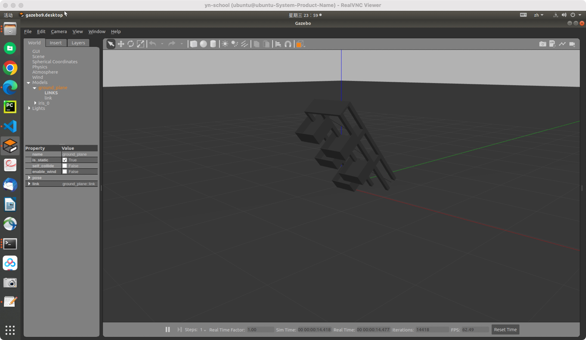
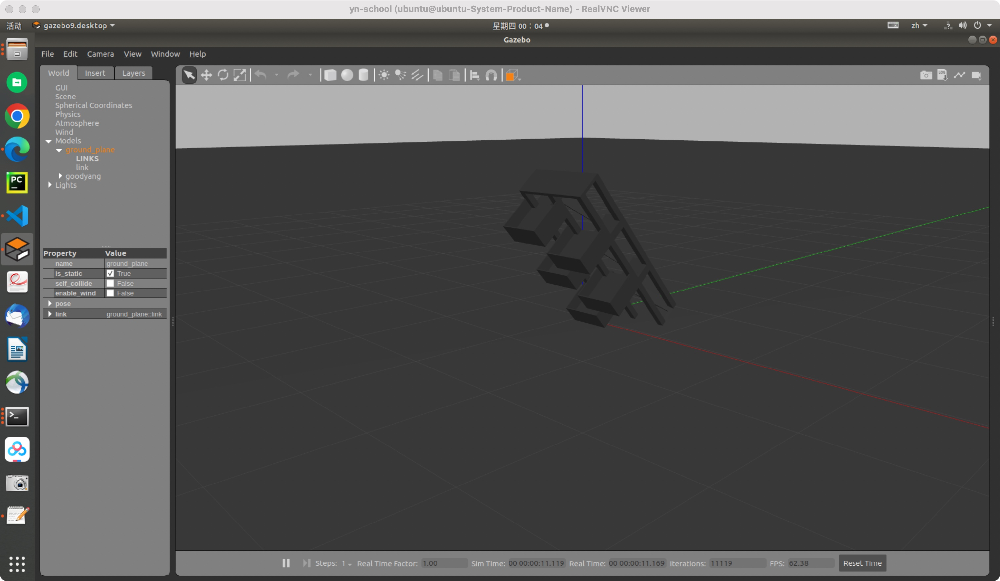

基于旋转三维激光雷达的四旋翼无人机自主飞行的模型搭建。
首先是运行px4的roslaunch命令：
cd /home/ubuntu/yn/SLAM/Drone_SLAM/PX4_Firmware
catkin_make
export ROS_PACKAGE_PATH=$ROS_PACKAGE_PATH:/home/ubuntu/yn/SLAM/Drone_SLAM/PX4_Firmware
export ROS_PACKAGE_PATH=$ROS_PACKAGE_PATH:/home/ubuntu/yn/SLAM/Drone_SLAM/PX4_Firmware/Tools/sitl_gazebo
source devel.setup.bash
roslaunch px4 mavros_posix_sitl.launch
此时便自动打开gazebo，展示出我们当前的模型信息。
对于模型信息，需要做以下修改：
首先新增阳台仿真模型，位于/home/ubuntu/yn/SLAM/Drone_SLAM/PX4_Firmware/Tools/sitl_gazebo/models/yangtai_model文件夹中，其中包括以下文件信息：
├── yangtai_model
│ ├── goodyang.dae # dae文件
│ ├── goodyang
│ │ ├── model.config # config文件
│ │ ├── model.sdf # sdf文件
其中需要将model.config中作如下修改，将dae文件路径更改为<uri>model://yangtai_model/goodyang.dae</uri>，这里采用相对路径表示。
接着创建一个没有ground_plane的world模型/home/ubuntu/yn/SLAM/Drone_SLAM/PX4_Firmware/Tools/sitl_gazebo/worlds/empty1.word，与empty.world的区别是，其中删除了以下关于ground_plane的内容：
<!-- A ground plane -->
<include>
<uri>model://ground_plane</uri>
</include>
接着便可以修改/home/ubuntu/yn/SLAM/Drone_SLAM/PX4_Firmware/launch/mavros_posix_sitl.launch文件，将其中的world和sdf修改为以下：
<arg name="world" default="$(find mavlink_sitl_gazebo)/worlds/empty1.world"/>
<arg name="sdf" default="$(find mavlink_sitl_gazebo)/models/yangtai_model/goodyang/model.sdf"/>
然而在运行时发现模型竟然倾斜了！

因此思考创建一个带有模型的world文件，观察原因。在/home/ubuntu/yn/SLAM/Drone_SLAM/PX4_Firmware/Tools/sitl_gazebo/worlds内新建一个my.world文件，如下所示：
<!--?xml version="1.0" ?-->
<sdf version="1.5">
<world name="my_world">
<!-- light -->
<include>
<uri>model://sun</uri>
</include>
<!-- plane -->
<include>
<uri>model://ground_plane</uri>
<script>
<uri>file://media/materials/scripts/gazebo.material</uri>
<name>Gazebo/White</name>
</script>
</include>
<!-- model -->
<model name='goodyang'>
<include>
<uri>model://yangtai_model/goodyang</uri>
</include>
</model>
</world>
</sdf>
接着在/home/ubuntu/yn/SLAM/Drone_SLAM/PX4_Firmware/Tools/sitl_gazebo/worlds路径下运行gazebo my.world命令，观察输出：

结果发现并没有区别，思考应该是模型和地面出现了碰撞导致。
下一步：解决模型倒塌；模型sdf添加带有lidar的无人机，并实现飞到某个点并回来；成功获取lidar信息并录包；进行地面点检测。